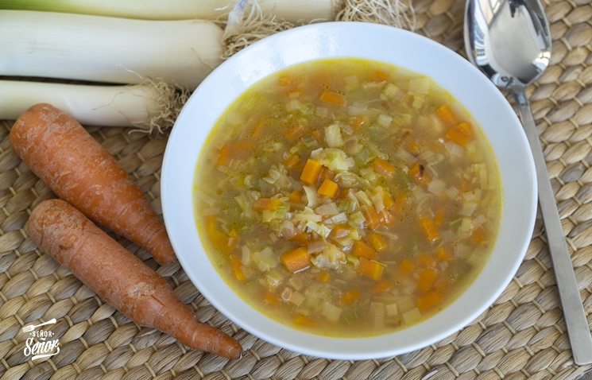
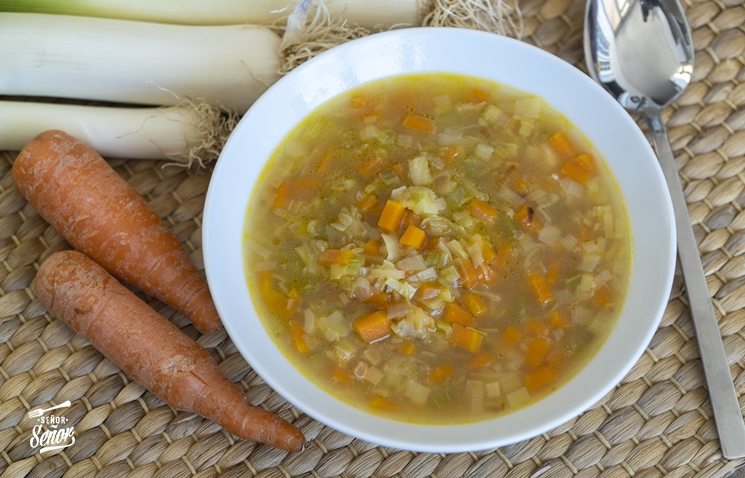

¡Bienvenido a nuestro sitio de recetas de cocina! Aquí encontrarás deliciosas opciones para sorprender a tus seres queridos.
Explora nuestras recetas y descubre nuevos sabores. Desde platos tradicionales hasta innovadoras creaciones, ¡te invitamos a disfrutar de la cocina en su máxima expresión!
En nuestra cocina, buscamos utilizar ingredientes frescos y de alta calidad para garantizar el mejor sabor y nutrición en cada plato.
Descubre algunos consejos útiles para mejorar tus habilidades en la cocina y lograr platos deliciosos: Recuerda siempre precalentar el horno antes de hornear para obtener resultados perfectos. Además, experimenta con diferentes especias y hierbas para darle un toque único a tus recetas. ¡Disfruta cocinando!
Somos un equipo apasionado por la cocina y la creatividad culinaria. En nuestro sitio, compartimos recetas deliciosas y consejos útiles para ayudarte a explorar y disfrutar del arte de cocinar. Nuestro objetivo es inspirarte a experimentar en la cocina, descubrir nuevos sabores y crear momentos inolvidables alrededor de la mesa. ¡Bienvenido a nuestra comunidad gastronómica!
| Plato | Tiempo de Cocción |
|---|---|
| Lasaña | 40 minutos |
| Tarta de Manzana | 30 minutos |
| Sopa de Verduras | 20 minutos |

 
